hive流程回顾
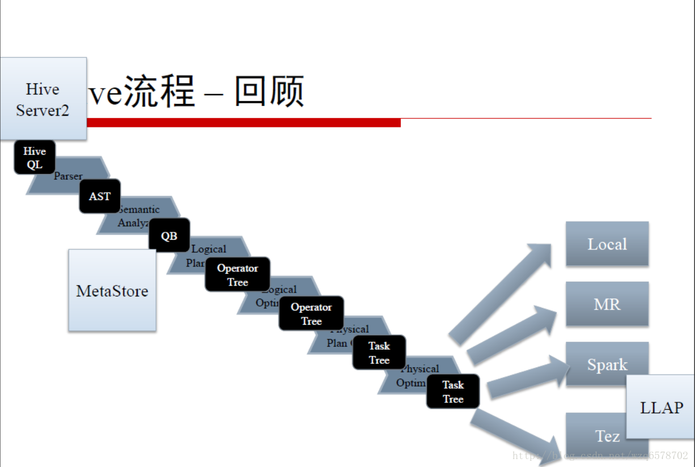
LLAP
LLAP是Live Long and Prosper（生生不息，繁荣昌盛）的缩写，现已故的美国演员、导演伦纳德·尼莫伊的每一条推文都用它来做结束语。伦纳德·尼莫伊在美国电视剧《星际迷航》中扮演斯波克而成名。是当前的美国网络流行语。
LLAP本来是想表达Long Lived Process （长驻进程）
后来借用了星际迷航的东西，搞成了LLAP，Live Long And Process(Prosper)
LLAP设计目的
Live-Long And Process
进一步提升Hive的执行速度
长驻在服务端的守护进程
取代直接与HDFS的DataNode交互（IO性能）
紧密集成的基于DAG的框架
缓存、预读机制
查询片段处理与访问控制
降低申请、释放Yarn Container的开销
LLAP守护进程的特点
与DataNode一样部署在服务端
结点无状态
故障恢复
弹性扩展
LLAP示例
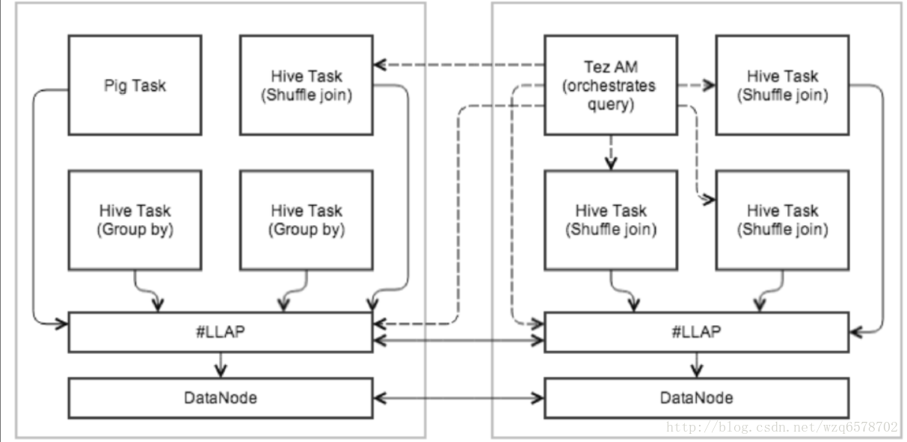
执行示例
Tez AM控制查询执行
查询的初始阶段在LLAP
Shuffle Join在Yarn Container执行
多个查询可以并发使用LLAP
LLAP设计文档
https://issues.apache.org/jira/secure/attachment/12665704/LLAPdesigndocument.pdf
https://cwiki.apache.org/confluence/display/Hive/LLAP
LLAP源码
服务端LlapDaemon
https://www.codatlas.com/github.com/apache/hive/master/llap-server/src/java/org/apache/hadoop/hive/llap/daemon/impl/LlapDaemon.java?line=83
客户端 LlapServiceDriver
https://www.codatlas.com/github.com/apache/hive/master/llap-server/src/java/org/apache/hadoop/hive/llap/cli/LlapServiceDriver.java?line=83
加速执行查询片段 Query Fragments
加速查询片段（Query Fragments）的执行
Filters (FIL, where)
Projections (SEL, select col)
Data Transformations (UDF)
Partial Aggregates (UDAF)
Sorting
Bucketing
Hash Joins / Semi Joins
LLAP加速执行查询片段 Query Fragments
加速查询片段（Query Fragments）的执行
并发执行
客户端API直接访问
https://www.codatlas.com/github.com/apache/hive/master/llap-server/src/java/org/apache/hadoop/hive/llap/daemon/impl/QueryInfo.java?line=40
tez任务的执行，查询片段会交给llap执行，直接在内存中执行，加快执行速度。这块和impla差不多。
LLAP IO
降低解压、抽取数据的开销
原来每个Task执行一次，现在一开始仅执行一次
支持多种数据格式，用一种新的InputFormat进行封装，目前效果最好是ORCFile
预测读、Bloom Filter提升读效率
https://www.codatlas.com/github.com/apache/hive/master/llap-server/src/java/org/apache/hadoop/hive/llap/io/api/impl/LlapInputFormat.java?line=83
LLAP Caching
缓存输入文件的元数据
缓存数据本身
可扩展的缓存失效机制：默认是LRFU
可扩展的缓存粒度控制：默认是列块为基本单位 ORCFile
https://www.codatlas.com/github.com/apache/hive/master/llap-server/src/java/org/apache/hadoop/hive/llap/cache/LowLevelCache.java?line=27
提供了读和写的方法，内部实现用的是一个currenthashmap。
1 | DiskRangeList getFileData(Object fileKey, DiskRangeList range, long baseOffset, |
ORCFile在LLAP使用LowLevelCache
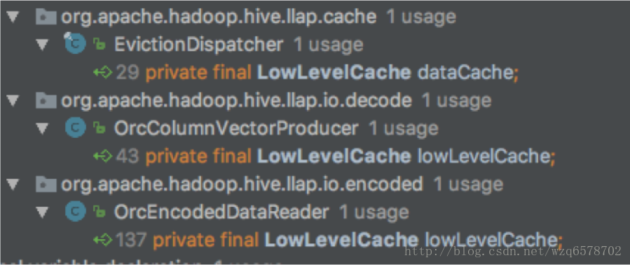
过载控制
目前，自身没有控制
提交Tez作业的Yarn有控制
依赖于上层Yarn的控制
调优需要根据实际情况多次测试
ACID
支持一致性和原子性
Delta Files 增量变更文件
一系列表的状态，可进行合并
支持多版本，请求指定版本
通过Yarn直接部署LLAP
http://public-repo-1.hortonworks.com/slider/0.30/HortonworksTechnicalPreview-Slider.pdf
Hive Server 2
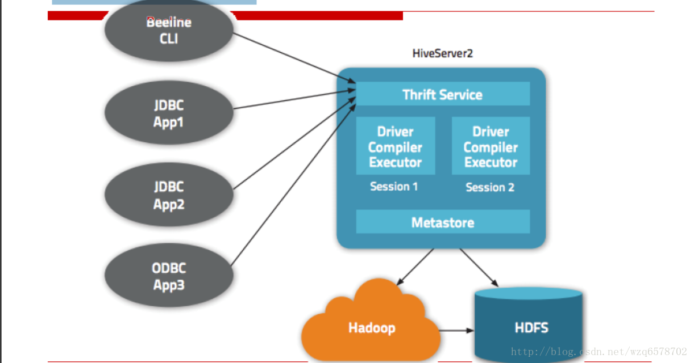
注意metadata可以放在外边，不一定在hiveserver2里边。
认证模型
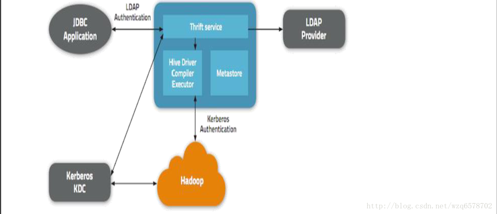
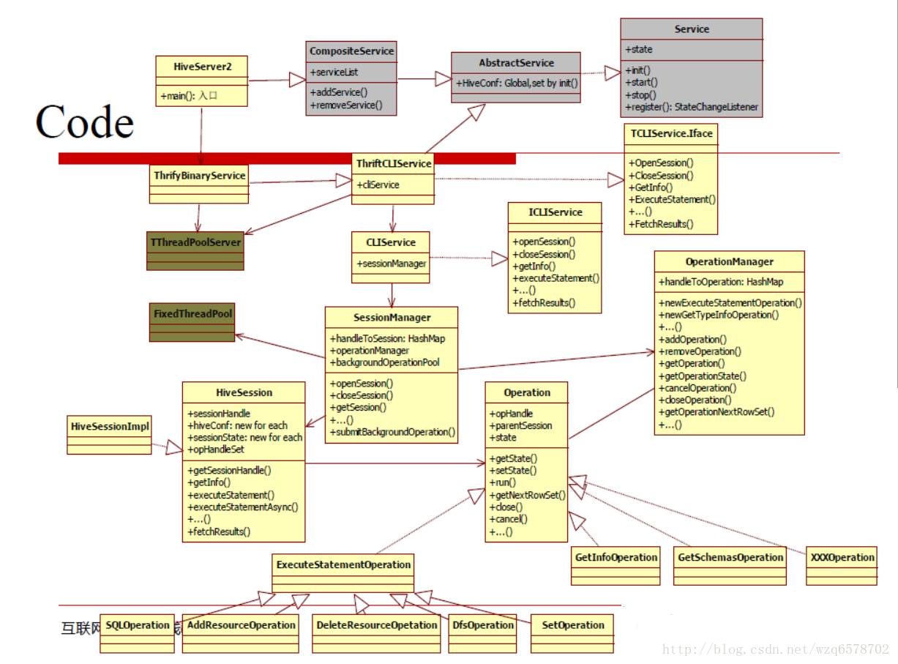
代码查看
一个标准的Thrift Server
https://www.codatlas.com/github.com/apache/hive/master/service/src/java/org/apache/hive/service/server/HiveServer2.java?line=95
1 | public static void main(String[] args) { |
Configurations and Run
Config:
hive.server2.transport.mode = binary | http | https
hive.server2.thrift.port = 10000
hive.server2.thrift.bind.host
hive.server2.thrift.min.worker.threads = 5
hive.server2.thrift.max.worker.threads = 500
hive.server2.async.exec.threads = 50
hive.server2.async.exec.shutdown.timeout = 10 (seconds)
hive.support.concurrency = true hive.zookeeper.quorum =
…
Run:
Start HiveServer2
bin/hiveserver2 &
Start CLI (use standard JDBC)
bin/beeline
!connect jdbc:hive2://localhost:10000
show tables;
select * from tablename limit 10;
新版支持监控Web UI
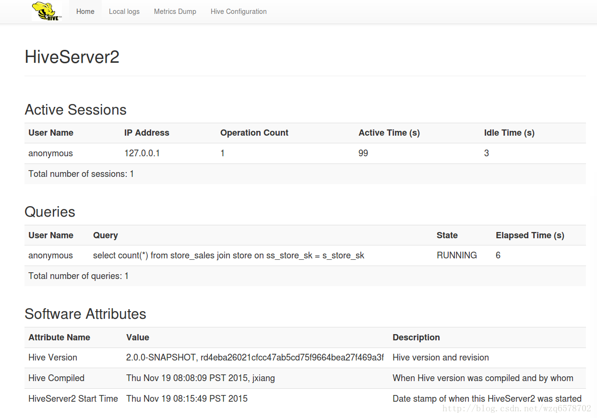
10002端口
https://cwiki.apache.org/confluence/display/Hive/Setting+Up+HiveServer2
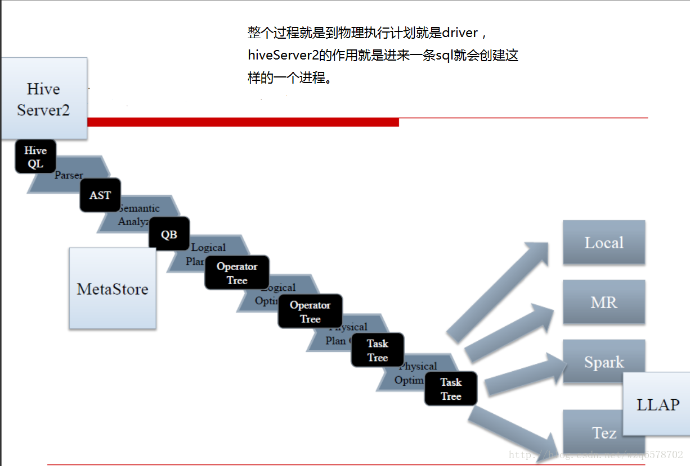
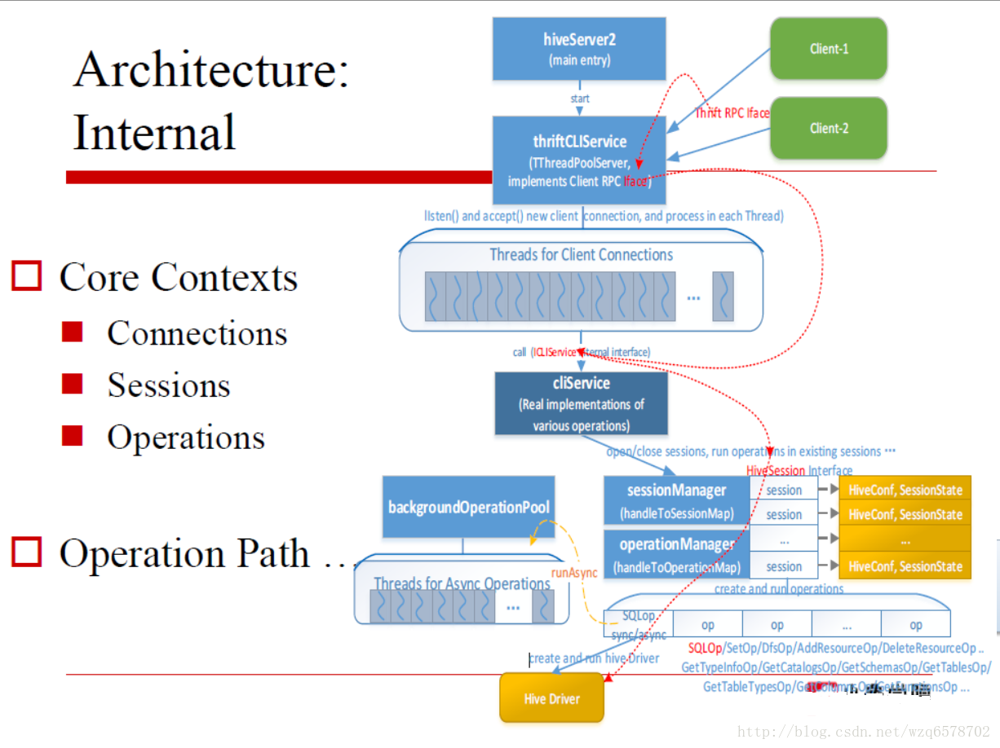
JDBC
https://cwiki.apache.org/confluence/display/Hive/HiveJDBCInterface
https://www.codatlas.com/github.com/apache/hive/master/jdbc/src/java/org/apache/hive/jdbc/HiveConnection.java?line=113
JDBC的本质是一个HiveServer2的Thrift Client，只不过对用户暴露了JDBC接口
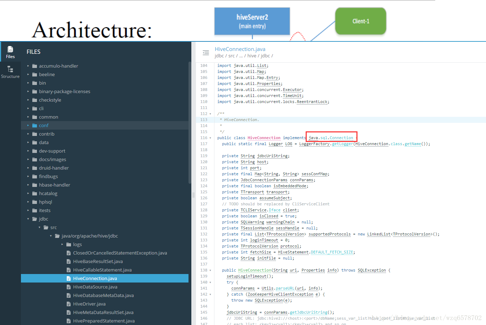
JDBC
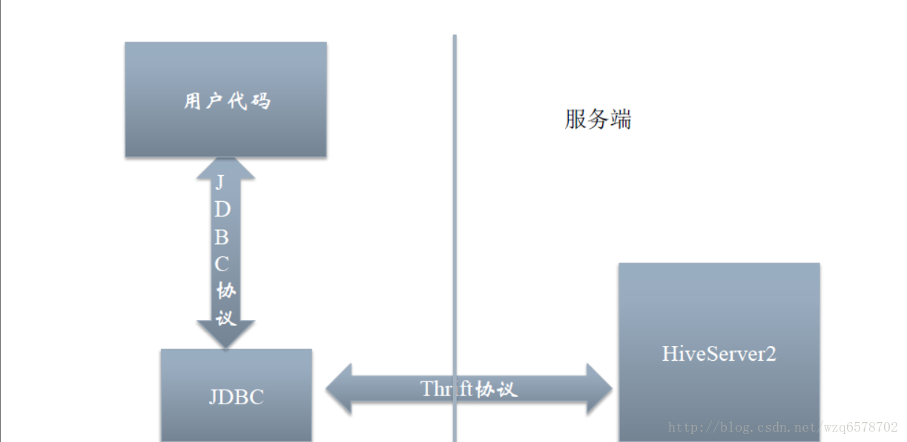
MetaStore (HMS)
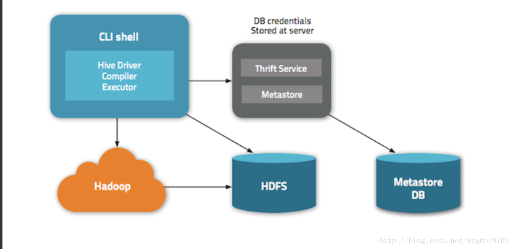
MetaStore配置
hive.metastore.uris
如果这个值为空，就表示使用本地数据库
一个逗号分隔的列表，表示使用Meta Store
MetaStore做什么
表结构的增删改
数据本身目录的删除、修改
数据结构、数据类型、序列化查询
元数据服务化，给别的程序如Pig、Impala、MR、Spark使用
Hcatlog本质上是一个MetaStore客户端
降低配置，提升安全
相关部署文档
https://cwiki.apache.org/confluence/display/Hive/AdminManual+MetastoreAdmin
层次结构
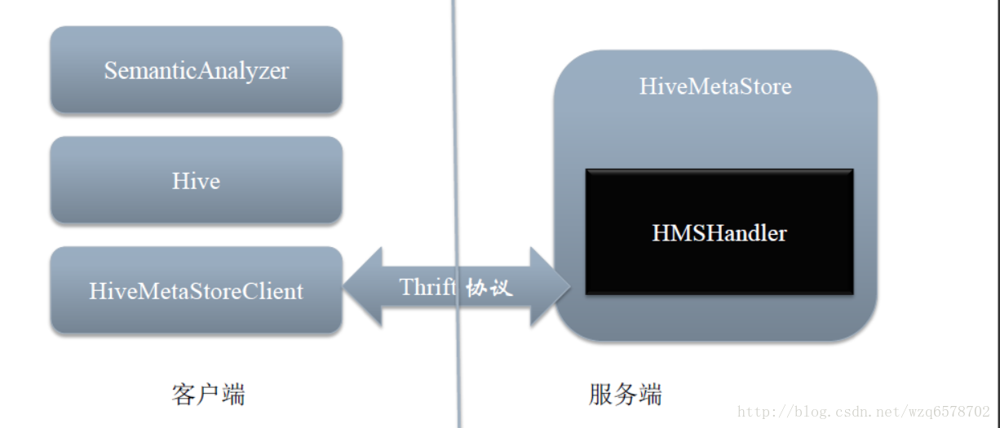
MetaStore代码
服务端：
https://insight.io/github.com/apache/hive/blob/master/metastore/src/java/org/apache/hadoop/hive/metastore/HiveMetaStore.java?line=165
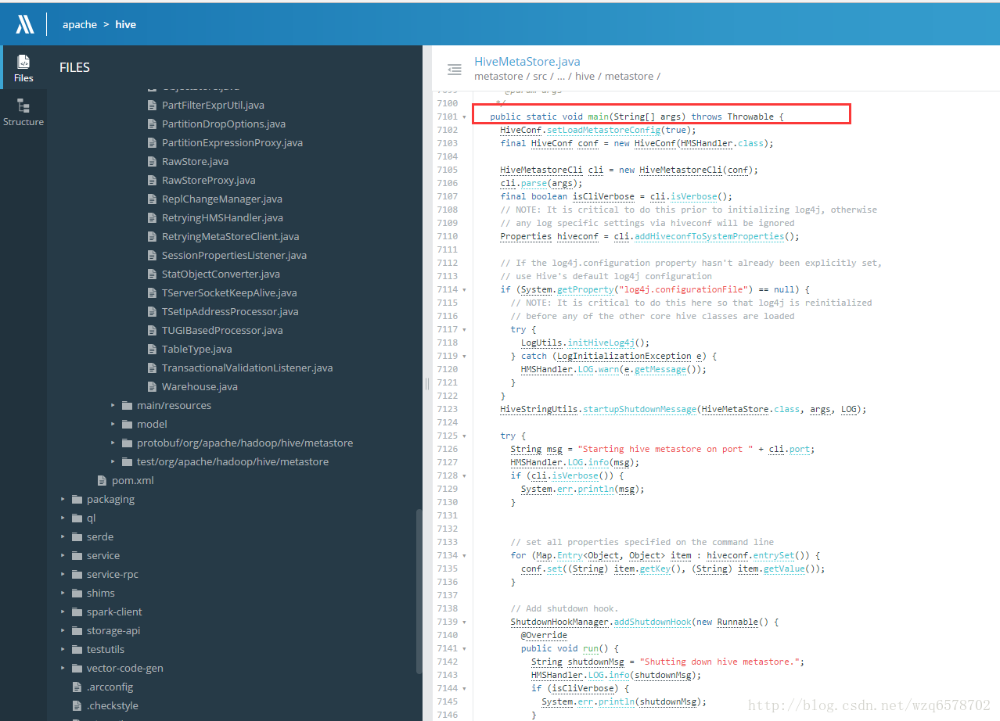
客户端：
https://insight.io/github.com/apache/hive/blob/master/metastore/src/java/org/apache/hadoop/hive/metastore/IMetaStoreClient.java?line=104
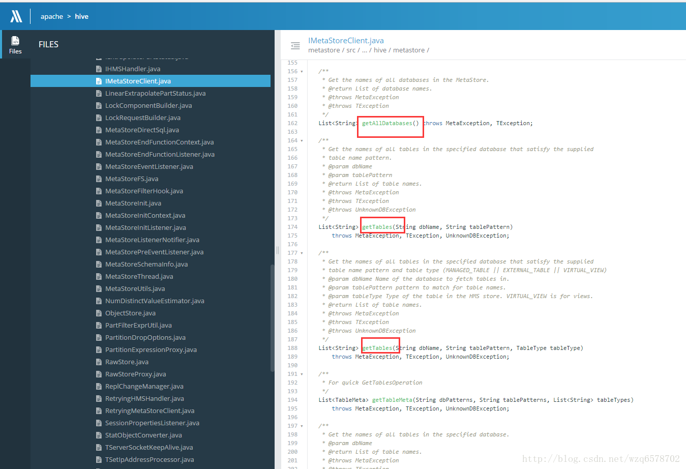
IMetaStoreClient内部含有很多获取表的方法。